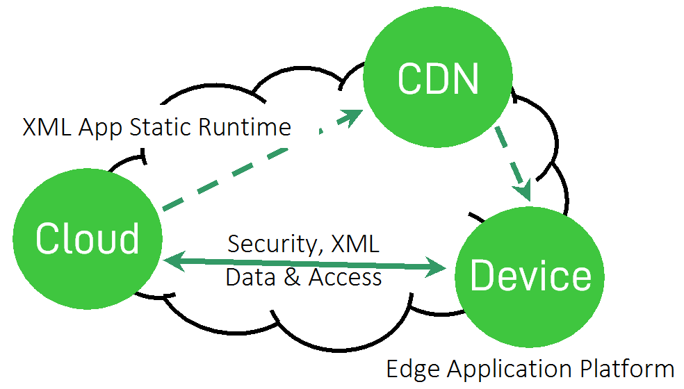

It is possible to create quite a sophisticated XML development environment with edge device acceleration and caching already today. Managing to build the entire infrastructure is a lot of work and includes building a new JavaScript framework and many more technologies not normally associated with running within a browser like a transaction engine and multi-instance support of applications within a single browser tab.
The end result is amazing from an XML perspective. We can get an entire environment where everything is XML, from the data format we open and store, to the applications designed to work with the data, all the way to events created because of a user clicking on something or data being update in the cloud.
A lot of technical challenges are solved by using XML as the common denominator throughout the entire software project. The extensible nature of XML with the ability to add new elements later in a project or mix and merge several XML applications into one XML document using namespaces are very powerful tools available to a developer.
The edge computing aspect of things, running most of the application logic inside the browser or even the entire application logic, brings some interesting effects to the table like:
Changing the role of the cloud to become a storage and coordination point, utilizing all connected clients for most application logic processing, dramatically reducing the cost of using cloud computing since fewer server instances are needed.
Reduced required network bandwidth as clients cache data locally, reducing the cost of data transfer to/from cloud providers.
Reduced required network bandwidth as clients cache data locally, reducing the cost of data transfer to/from cloud providers.
Handles high latency scenarious like mobile broadband, unstable networks, or when the end-user is far away from the cloud region where a Software-as-a-Service (SaaS) or app is deployed.
Uniquely enables SaaS companies to provide excellent service worldwide with as little as one cloud region.
The drawback is that developers need to develop in XML instead of JavaScript or server code, which for people without any prior XML knowledge might be challenging.
Architectural patterns may need to change somewhat as the client-side edge execution favors backends designed as stateless micro services, i.e. a Service Oriented Architecture (SOA), instead of large monolithic APIs.
It is our experience that it is considerably faster to develop applications using XML, than creating the same application using traditional JavaScript frameworks and technologies. It results in considerably less source code that is easier to read and maintain. The source code can be validated by an XML schema, and it becomes much easier to collaborate between several people using GIT to build large enterprise-grade projects than having multiple people editing the same JavaScript code. The key is here how XML can be modularised using well-known technologies like XLink and split up into multiple documents and how XML enables a higher abstraction level with larger building blocks than traditional programming.
XML software applications can be hosted on any web server. They do not require any specific installed code in the cloud to work, nor are they dependent on any build toolchain. They can also be cached out close to end-users using any Content Delivery Network (CDN) as they are not dependent on server-side logic.
Figure 9. Uniquely leveraging a CDN to distribute XML software applications for low-latency
|  |
We thereby believe that applications on the Internet, that remind you of traditional software, will be more and more written using XML as they are easy to build, simple to host, and share a lot of properties of what made HTML popular in the first place. Almost anyone can write their own home page using HTML, but not everyone can build an advanced HTML5 application using JavaScript. XML software applications have the ability to bring the simplicity of markup back, replacing the programmatic web we see today with declarative markup.
Hopefully these two projects can show what is possible to do with XML, in order for more people to follow and build up a strong toolchain for web-based XML development. Together the available efforts and tools can be extended and packaged to make XML mainstream for web developers.
Imagine surfing a web-based of XML software applications and XForms instead of HTML and JavaScript.